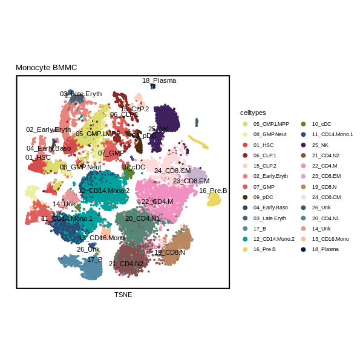
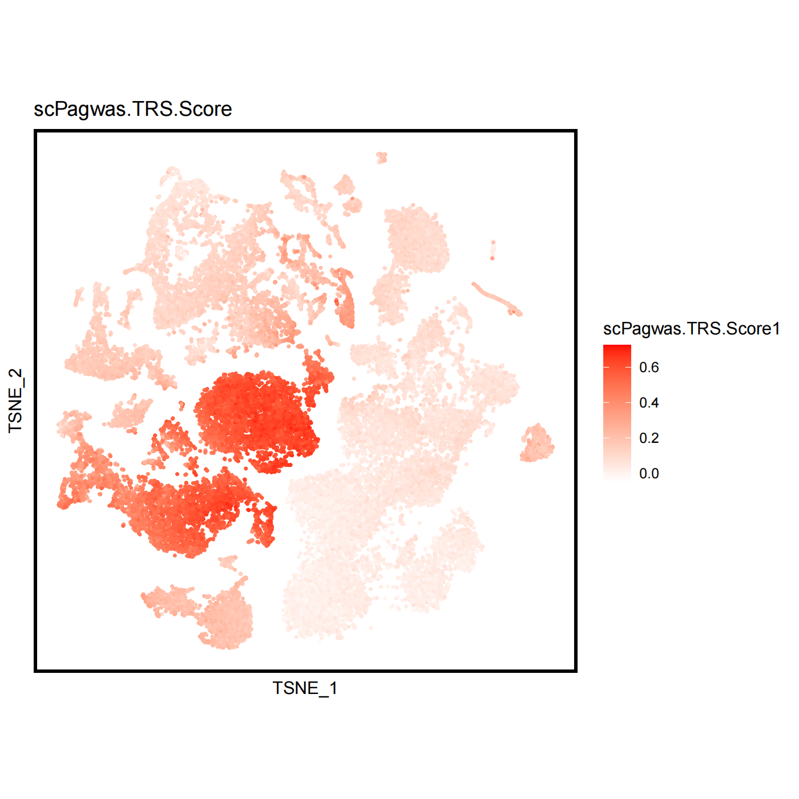
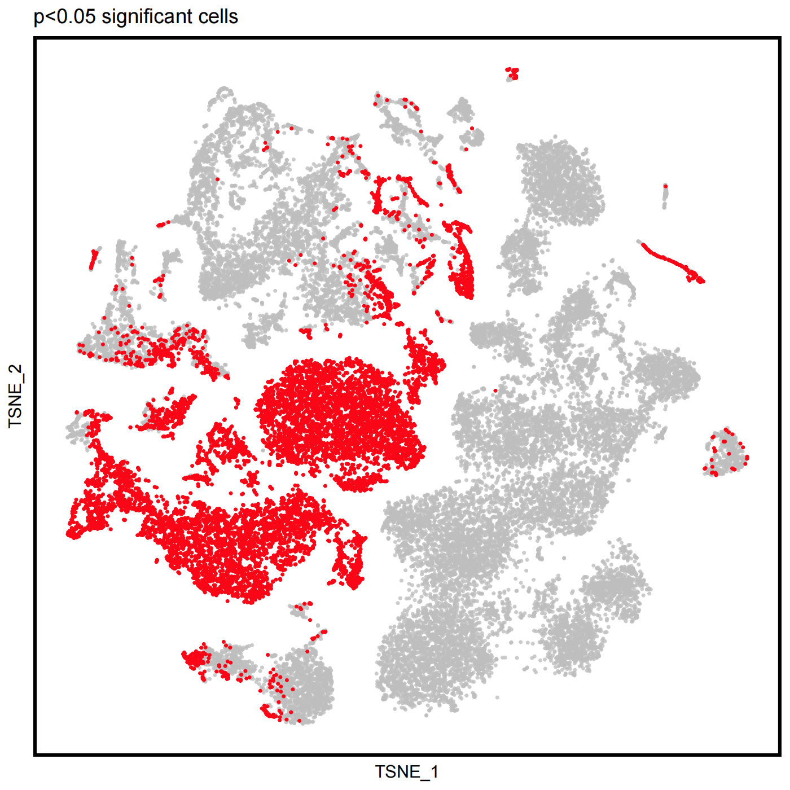
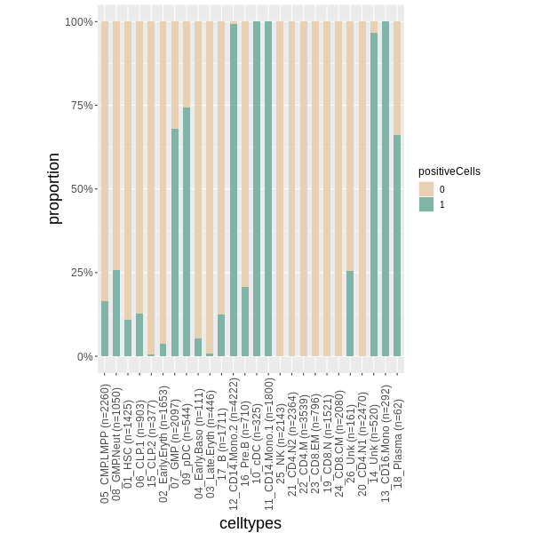
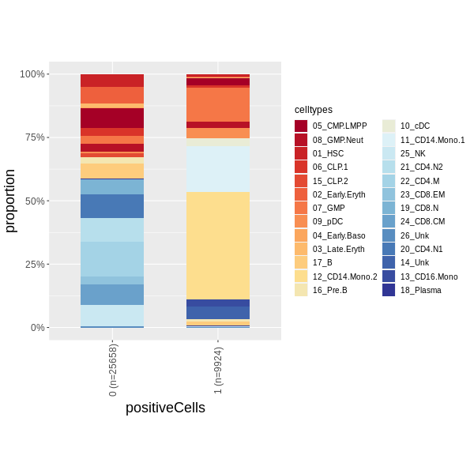
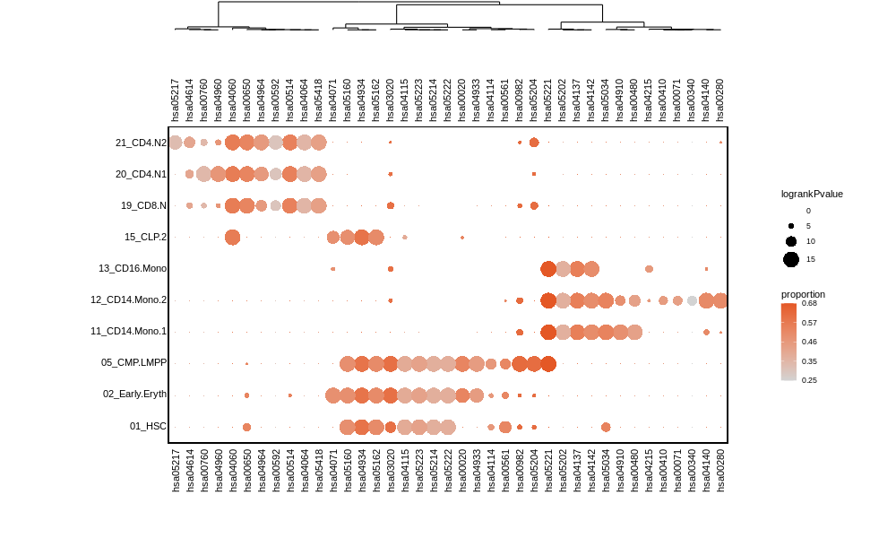
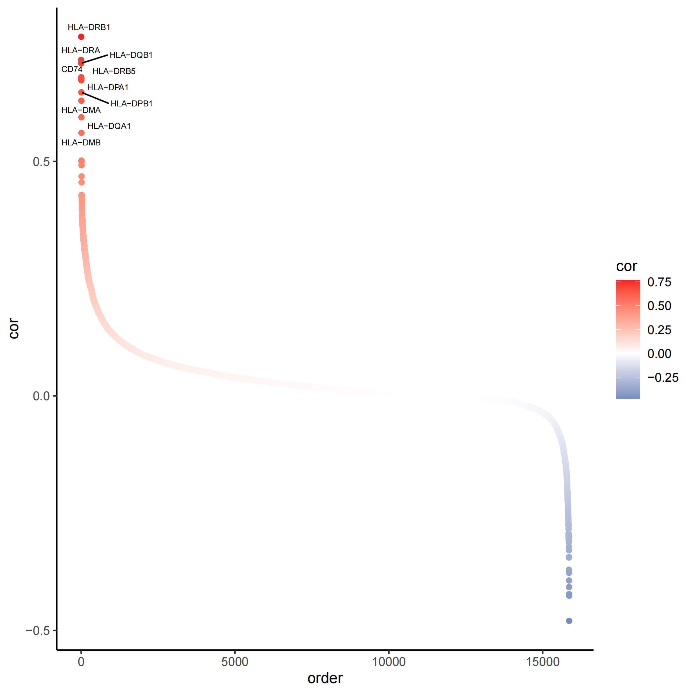
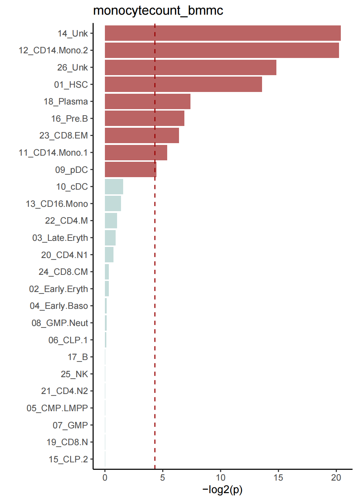

Bmmc_monocytecount_singlecell_celltype_vignette
Last Updated: 19, 七月, 2022 at 14:16
Bmmc_monocytecount_singlecell_celltype_vignette.RmdPreprocessed data
We use BMMC scRNA-seq data and monocyte count trait to test scPagwas. The processed data can be download from here: monocytecount_prune_gwas_data.txt https://1drv.ms/t/s!As-aKqXDnDUHi6sx7Hqblj2Sgl7P8w?e=wGAip7
BMMC scRNA-seq data can be obtained and treated in Data_input_preproccess_for_scPagwas.
1. Compute the singlecell and celltype result for monocytecount trait
If we running scPagwas in multi-core in Server environment, there may cause an error: Error: Two levels of parallelism are used. See?a ssert_cores`` add this code before call in R environment:
export OPENBLAS_NUM_THREADS=1There is no need to run this code in window system.
In this example, we run the scPagwas for usual step, both running singlecell and celltype process.
library(scPagwas)
Pagwas<-scPagwas_main(Pagwas =NULL,
gwas_data ="monocytecount_prune_gwas_data.txt",
Single_data ="Seu_Hema_data.rds",
output.prefix="monocytecount_scPagwas",
output.dirs="monocytecount_bmmc",
seruat_return=T,
Pathway_list=Genes_by_pathway_kegg,
ncores=5,
assay="RNA",
singlecell=T,
celltype=T,
block_annotation = block_annotation,
chrom_ld = chrom_ld)
save(Pagwas,file = "monocytecount_bmmc_Pagwas1.10.0.RData")Sometime, we need to remove the objects in cache folder:
2. Result interpretation
There are two types of result, Seruat format return result and files output;
2.1 Pagwas : return result for seruat_return=TRUE
> print(Pagwas)
An object of class Seurat
16488 features across 35582 samples within 3 assays
Active assay: RNA (15860 features, 5000 variable features)
2 other assays present: scPagwasPaHeritability, scPagwasPaPca
3 dimensional reductions calculated: pca, tsne, umap
> names(Pagwas@misc)
[1] "Pathway_list" "pca_cell_df"
[3] "lm_results" "bootstrap_results"
[5] "scPathways_rankPvalue" "gene_heritability_correlation"Returns a Seruat data with entries(seruat_return=T):
-
In this Seruat result, two new assays were added:
scPagwasPaPca: An assay for S4 type of data; the svd score result for pathways in each cells;
scPagwasPaHeritability: An assay for S4 type of data; the gPas score matrix for pathways in each cells;
-
In meta.data, four columns were added:
scPagwas.TRS.Score1: inheritance related score, enrichment socre for genetics top genes;
scPagwas.gPAS.score: Inheritance pathway regression effects score for each cells;
CellScalepValue: Ranked CellScalepValue for each cells;
CellScaleqValue: Ranked CellScaleqValue for each cells, adjust p value.
-
A new element names misc is added in result,
Pagwas@miscis a list data including:Pathway_list: filtered pathway gene list;
pca_cell_df: a pahtway and celltype data frame for pathway svd(1’st pca) result for each celltype;
lm_results: the regression result for each celltype;
gene_heritability_correlation: heritability correlation value for each gene;
scPathways_rankPvalue: p values for each pathway in each single cell;
bootstrap_results: The bootstrap data frame results for celltypes including bootstrap pvalue and confidence interval.
2.1 Pagwas : output files result
In monocytecount_bmmc result document folder, several result files are including:
scPagwas.run.log : The running time log for scPagwas;
*_parameters.txt : The parameters log for scPagwas;
*_cellytpes_bootstrap_results.csv : The result of cellytpes for bootstrap p results;
*_gene_heritability_correlation.csv : The result of gene heritability correlation with gPAS score.
*_Pathway_singlecell_lm_results.txt : The regression result for all pahtway and single cell matrix;
*_singlecell_Pathways_rankPvalue.csv : The pathway pvalue for eache singlecell;
*_singlecell_scPagwas_score_pvalue.Result.csv : The data frame result for each cell inlcuding scPagwas.TRS.Score, scPagwas.gPAS.score, pValueHighScale, qValueHighScale;
scPagwas_cache is a temporary folder to save the SOAR data, you can remove it when finish the scPagwas. Sometimes, If scPagwas is failed of running for some reason, you should remove this folder or run this SOAR::Remove(SOAR::Objects()) to remove the object in this folder.
3. Result Visualization
3.1 Visualize the scPagwas Score of single cell data in UMAP or TSNE plot.
- DimPlot of singlecell data.
require("RColorBrewer")
require("Seurat")
require("SeuratObject")
require("ggsci")
require("dplyr")
require("ggplot2")
require("ggpubr")
#check the objects
color26 <- c("#D9DD6B","#ECEFA4","#D54C4C","#8D2828","#FDD2BF","#E98580","#DF5E5E","#492F10","#334257","#476072","#548CA8",
"#00A19D","#ECD662","#5D8233","#284E78","#3E215D","#835151","#F08FC0","#C6B4CE","#BB8760","#FFDADA","#3C5186",
"#558776","#E99497","#FFBD9B","#0A1D37")
png("monocyte_bmmc_dimplot_umap.png",width = 600, height = 600)
Seurat::DimPlot(Pagwas,pt.size=1,reduction="tsne",label = T, repel=TRUE)+
scale_colour_manual(name = "celltypes", values = color26)+
umap_theme()+ggtitle("Monocyte BMMC")+labs(x="TSNE",y="")+theme(aspect.ratio=1)
dev.off()
scPagwas.TRS.Score1 and positive(p<0.05) cells showing in dimplot.
scPagwas_Visualization(Single_data=Pagwas,
p_thre = 0.05,
FigureType = "tsne",
width = 7,
height = 7,
lowColor = "white",
highColor = "red",
output.dirs="figure",
size = 0.5,
do_plot = T)- scPagwas.gPAS.score dimplot.

- scPagwas.TRS.Score dimplot.

- scPagwas_CellScaleqValue dimplot.

Positive cells(q value<0.05): red dot; Negative cells: other dot.
3.2 Plot the barplot of the proportion of positive Cell.
Plot the barplot of the proportion of positive Cells in celltypes:
plot_bar_positie_nagtive(seurat_obj=Pagwas,
var_ident="celltypes",
var_group="positiveCells",
vec_group_colors=c("#E8D0B3","#7EB5A6"),
do_plot = T)
Plot the barplot of the proportion of celltypes in positive and negative Cells:
png("plot_bar_positie_nagtive2.png",width = 600, height = 600)
plot_bar_positie_nagtive(seurat_obj=Pagwas,
var_ident="positiveCells",
var_group="celltypes",
p_thre = 0.01,
vec_group_colors=NULL,
f_color=colorRampPalette(brewer.pal(n=10, name="RdYlBu")),
do_plot = T)
dev.off()
3.3 Visualize the heritability correlated Pathways
Plot the specific genetics pathway for each celltypes
library(tidyverse)
library("rhdf5")
library(ggplot2)
library(grDevices)
library(stats)
library(FactoMineR)
library(scales)
library(reshape2)
library(ggdendro)
library(grImport2)
library(gridExtra)
library(grid)
library(sisal)
source(system.file("extdata", "plot_scpathway_contri_dot.R", package = "scPagwas"))
png("plot_scpathway_dot.png",width = 1000, height = 600)
plot_scpathway_dot(Pagwas=Pagwas,
celltypes=c("01_HSC","02_Early.Eryth","05_CMP.LMPP","11_CD14.Mono.1","12_CD14.Mono.2","13_CD16.Mono","15_CLP.2","19_CD8.N","20_CD4.N1","21_CD4.N2"),
topn_path_celltype=5,
filter_p=0.05,
max_logp=15,
display_max_sizes=F,
size_var ="logrankPvalue" ,
col_var="proportion",
shape.scale = 8,
cols.use=c("lightgrey", "#E45826"),
dend_x_var = "logrankPvalue",
dist_method="euclidean",
hclust_method="ward.D",
do_plot = T,
#figurenames = "Pathway_plot.pdf",
width = 7,
height = 7)
dev.off()
3.4 Plot the heritability correlated genes
pdf("heritability_cor_scatterplot.pdf")
heritability_cor_scatterplot(gene_heri_cor=Pagwas@misc$gene_heritability_correlation,
topn_genes_label=10,
color_low="#035397",
color_high ="#F32424",
color_mid = "white",
text_size=2,
do_plot=T,
max.overlaps =20,
width = 7,
height = 7)
dev.off()
3.5 Show expression of the top heritability correlation genes in celltypes
library("ggsci")
library("Seurat")
top5genes<-rownames(Pagwas@misc$gene_heritability_correlation)[order(Pagwas@misc$gene_heritability_correlation,decreasing = T)[1:5]]
pdf("plot_vln_Corgenes.pdf",width = 6, height =7)
plot_vln_Corgenes(seurat_obj=Pagwas,
assay="RNA", slot="data",
var_group="celltypes",
vec_features=top5genes,
vec_group_colors= color26,
do_plot = T
)
dev.off()
3.6 celltypes bootstrap_results reuslt
Barplot for celltypes
Bootstrap_P_Barplot(p_results=Pagwas@misc$bootstrap_results$bp_value[-1],
p_names=rownames(Pagwas@misc$bootstrap_results)[-1],
figurenames = "Bootstrap_P_Barplot.pdf",
width = 5,
height = 7,
do_plot=T,
title = "monocytecount_bmmc")
Forest plot for estimate value.
pdf("estimate_Plot.pdf")
Bootstrap_estimate_Plot(Pagwas=Pagwas,
width = 9,
height = 7,
do_plot=T)
dev.off()
sessionInfo()
#> R version 4.1.0 (2021-05-18)
#> Platform: x86_64-w64-mingw32/x64 (64-bit)
#> Running under: Windows 10 x64 (build 19044)
#>
#> Matrix products: default
#>
#> locale:
#> [1] LC_COLLATE=Chinese (Simplified)_China.936
#> [2] LC_CTYPE=Chinese (Simplified)_China.936
#> [3] LC_MONETARY=Chinese (Simplified)_China.936
#> [4] LC_NUMERIC=C
#> [5] LC_TIME=Chinese (Simplified)_China.936
#>
#> attached base packages:
#> [1] stats graphics grDevices datasets utils methods base
#>
#> other attached packages:
#> [1] knitr_1.33
#>
#> loaded via a namespace (and not attached):
#> [1] magrittr_2.0.1 R6_2.5.0 ragg_1.2.2
#> [4] rlang_0.4.11 fastmap_1.1.0 stringr_1.4.0
#> [7] tools_4.1.0 xfun_0.24 jquerylib_0.1.4
#> [10] systemfonts_1.0.4 htmltools_0.5.1.1 yaml_2.2.1
#> [13] digest_0.6.27 rprojroot_2.0.2 pkgdown_2.0.2
#> [16] crayon_1.4.1 textshaping_0.3.6 BiocManager_1.30.16
#> [19] purrr_0.3.4 sass_0.4.0 fs_1.5.0
#> [22] memoise_2.0.1 cachem_1.0.6 evaluate_0.14
#> [25] rmarkdown_2.12 stringi_1.6.1 compiler_4.1.0
#> [28] bslib_0.2.5.1 desc_1.3.0 jsonlite_1.7.2
#> [31] renv_0.15.4